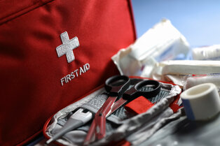
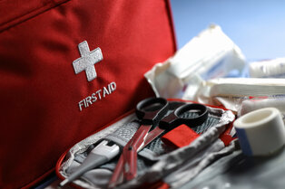

m
assive Hemorrhage
Massive Hemorrhage is when a life threatening amount of blood is being lost. Because it happens so fast, it is the first priority when assessing a trauma victim. Hemorrhaging wounds are treated differently depending on where they are located on the body. Most wounds are categorized to either the torso or an extremity.
torso
Torso wounds can be more complex than extremity wounds due to the essential organs in the chest and abdomen. It is usually not possible to pinch off the source of bleeding, so wound packing and pressure are the preferred method.
- If the piercing object is still in the wound, do not remove it. Instead stabalize it and pack the wound around it.
- If the wound is in the chest cavity, use a chest seal to allow air and fluids to escape but prevent more air from entering.
- If the wound is in the abdomen, carefully but firmly insert clotting agent and gauze into the wound until you physically cannot pack anymore in.
- Once bleeding has been stopped, thoroughly examine the rest of the body for other sources of bleeding that may have been missed.
extremities
Extremity wounds may seem less life threatening, but major blood vessels such as the axillary arteries in the arms or femoral arteries in the legs can pump large amounts of blood out of the body if ruptured. Excluding the neck and head, extremity wounds are treated with a tourniquet. If the bleed is small enough, packing gauze, clotting agent, and a pressure dressing may be enough. Otherwise, apply tourniquet quickly and properly. A tourniquet turns circular tension from the windlass into compression tension around the limb. The goal of a tourniquet is to press all the blood vessels in the limb into the bone in order to stop blood flow.
- Apply the tourniquet 2-3 inches above the highest bleed.
- Pull the strap as tight as possible and fasten down with velcro.
- Twist the windlass to apply pressure until the bleeding stops and there is no pulse below the tourniquet.
- Hook the windlass in the catch and write the time the tourniquet was applied.

 

supplies used
- Tourniquet
- Gauze
- Clotting Agent
- Compression Bandage